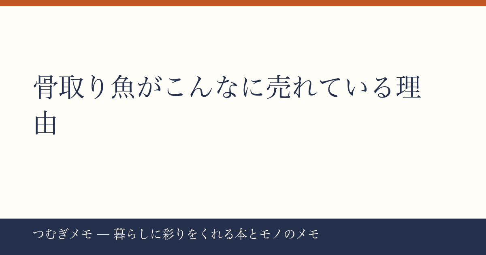

こんにちは、つむぎです。今週の楽天ランキングを眺めていたら、ある「食材」が上位を独占していて思わず二度見してしまいました。この記事でわかること：骨取りさば・骨取り鮭がなぜ今これほど売れているのか、その背景と「賢い買い方」をまとめます。
今週の要点
- 骨取りさばが楽天総合1位・10位に同時ランクイン、骨取り鮭が2位に入る異例の週
- レビュー件数は骨取りさばだけで合計5万件超。「一過性のバズ」ではない積み上がりが見える
- 「骨なし・無塩・冷凍」という3つのキーワードが、健康ニーズと時短ニーズを同時に満たしている
---
まず事実から整理する。今週の楽天ランキングで確認できた骨取り魚の顔ぶれはこうだ。
- 【楽天/1位】骨取りさば 北欧産 訳あり（1kg・2kg選択可）★4.78・レビュー36,502件
- 【楽天/10位】骨取りサバ切身 1kg（レビュー18,806件・★4.51）
- 【楽天/2位】骨取り銀さけ 訳あり（1kg・2kg選択可）★4.78・レビュー3,469件
3商品の合計レビュー数はゆうに5万件を超える。「お試し価格帯の商品」が10位に入っていることも見逃せない。初めて買う人向けの小容量が売れているということは、新規ユーザーがこのカテゴリに流入し続けているサインだ。
さらに今週は限定セールが重なった。1位の骨取りさばは「27日正午まで半額・最大4,990円OFF」、2位の骨取り鮭は「同じく半額・1kgが7,980円→3,990円」とタイミングが揃っていた。セールが引き金になったのは間違いないが、ベースのレビュー数を見れば、これは今週だけの現象ではなく「ずっと人気だった商品が、セールで可視化された」という構図だとわかる。
今日できること：「お試し送料無料2,490円〜」の1kg商品から試してみるのが一番リスクが低い。大容量を一気に買う前に、解凍のしやすさや味の好みを確かめる順番がおすすめだ。
---
骨取り魚が支持される理由は、表面上は「便利だから」だが、一段掘ると3つのニーズが重なっている。
①骨なし＝調理の心理的ハードルを下げる
魚を敬遠する理由として「骨が面倒」「子どもが嫌がる」はずっと言われ続けてきた。骨取り加工済みであれば、フライパンで焼くだけ・電子レンジに入れるだけで完結する。「魚料理を増やしたいけど続かない」という人にとって、これは習慣化のボトルネックをまるごと取り除いてくれる。
②無塩＝健康意識の高まりへの直球回答
今回ランクインした商品の多くが「無塩」を明示している。塩分を自分でコントロールしたいというニーズは、健康診断の結果を気にする年代に限らず、離乳食・幼児食にも使いたいという子育て層にも広がっている。「無塩」という一言が、商品の使い回しの幅を大きく広げているのだ。
③冷凍ストック＝食費の見直しブームとの相性
冷凍庫に常備しておけば、「今日は魚にしよう」と思ったときに即実行できる。外食費や総菜代を見直す動きが根強い中、「良質なタンパク質をストックして自炊の質を上げる」という発想が受け入れられやすい地盤ができている。骨取りさばが「北欧産・天然・ノルウェー産またはイギリス産」を明示しているのも、産地を気にする層への安心材料になっている。
今日できること：冷凍庫の「ストック枠」を意識して確保する。骨取り魚1kgを入れられるスペースをつくっておくだけで、セール時に迷わず買える。
---
ランクインした商品の多くに「訳あり」の文字がある。かつてこの表記は「規格外品＝品質が落ちる」という印象を持たれがちだった。しかし今や、訳あり品を選ぶことは「賢い消費」として積極的に評価される空気に変わっている。
今回の骨取りさば（1位）は「形が揃っていない・切り落とし混在」などが訳あり理由として挙げられるケースが多く、味や鮮度には直接関係しない。レビュー36,502件・★4.78というデータがその証明になっている。これだけの件数があれば「たまたま良い評価が集まった」ではなく、継続的に満足されている商品と判断してよい。
食品ロス削減という文脈でも「訳あり＝エコな選択」という価値転換が進んでいる。外見が不揃いなだけで廃棄されそうだった魚が食卓に届く、という流れを「得した」と感じるか「手間を省いた」と感じるかはひとそれぞれだが、いずれにしても損はない選択だ。
今日できること：訳あり品を選ぶときは「何が訳ありなのか」を商品説明で必ず確認する。「形が不揃い」「端材混じり」なら実用上ほぼ問題なし。「解凍の繰り返し」「鮮度基準ギリギリ」なら慎重に。この見極めだけで失敗がぐっと減る。
---
Q. 冷凍の骨取り魚、解凍方法はどれがベストですか？
A. 前日の夜に冷蔵庫へ移して自然解凍するのが最も品質を保ちやすい。時間がないときは流水解凍（袋ごと）が次善策。電子レンジの解凍モードは加熱ムラが出やすいため、魚の場合は最後の手段にするのがおすすめだ。
Q. 骨取りさばと骨取り鮭、栄養面での違いはありますか？
A. どちらも良質な脂質とタンパク質を含む優秀な食材だが、脂のタイプや含有量には差がある。具体的な数値はここでは書かないが、「青魚の脂」が気になる人はさば、「さっぱりした脂で量をコントロールしたい」なら鮭、という選び方が一般的に言われている。どちらが優れているというわけではなく、週の中でローテーションするのが最も理にかなっている。
Q. 1kgと2kg、どちらを選べばいいですか？
A. 初めて購入するなら1kgで試すのが鉄則。同じブランドでも個体差や好みの問題があるため、大容量を買って「口に合わなかった」は避けたい。1kgで気に入ったら次は2kgにして単価を下げる、という段階を踏む買い方が結局コスパがいい。
---
「魚を日常的に食べたい、でも続かない」という壁を、骨取り冷凍魚はシンプルに壊してくれる。レビュー数万件という積み上がりは、何万人もの人が「これで続いた」と感じた記録でもある。今週のセールは終わっても、この商品カテゴリ自体は次のセールのたびにランクインし続けると思う。セールアラートを設定しておくと、次の「半額タイミング」を逃さずに済む。
このブログ「つむぎメモ」は、AIとの共同作業を取り入れながら運営している実験的なメディアです。記事の構成やリサーチ補助にAIを活用しつつ、選ぶ・判断する・文体を整えるのは僕自身がやっています。「AIを使いながらも人の目線を残す」という試みが、読んでくれている方に少しでも伝わっていたら嬉しいです。また来週。
📚 目次へ